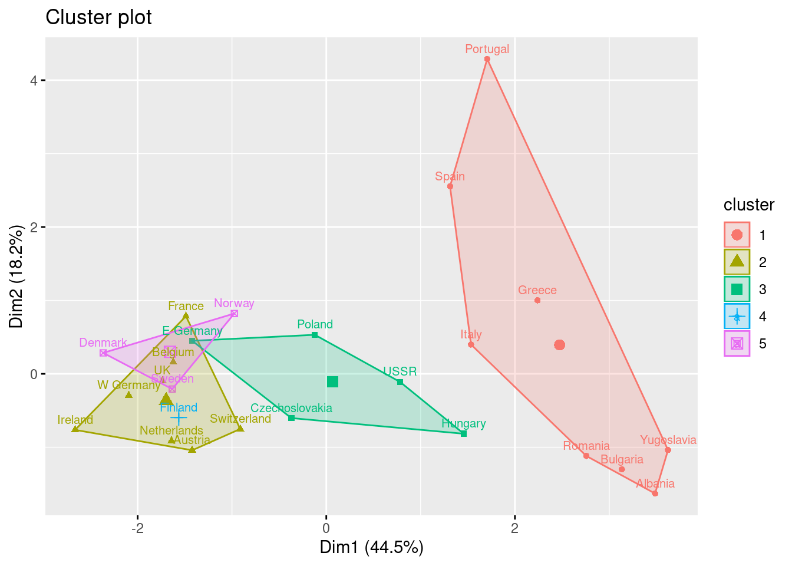
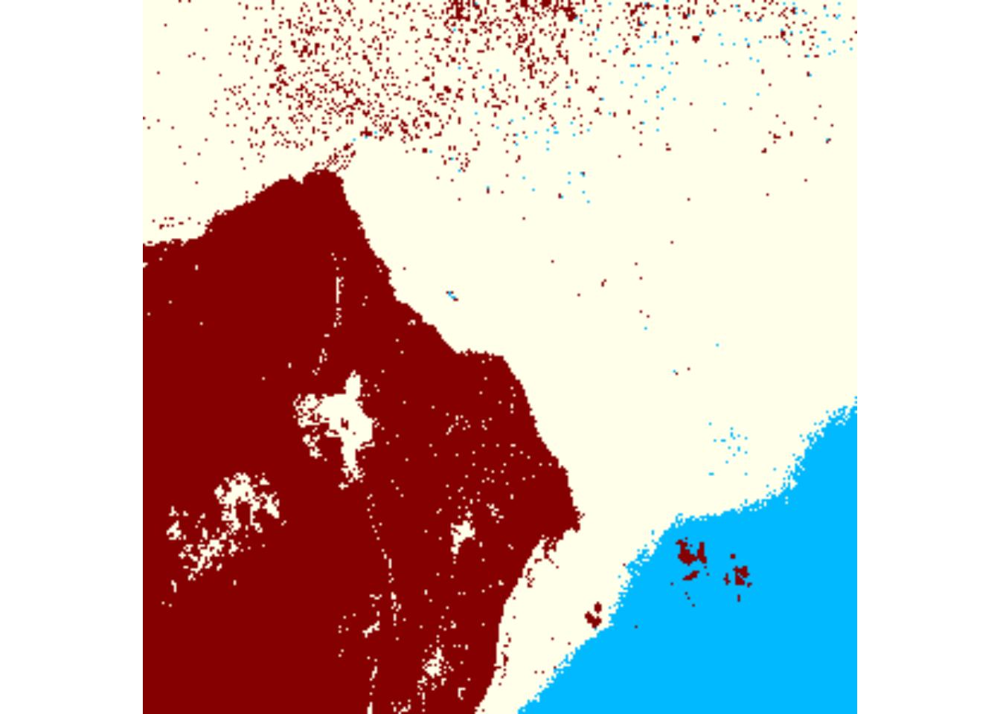
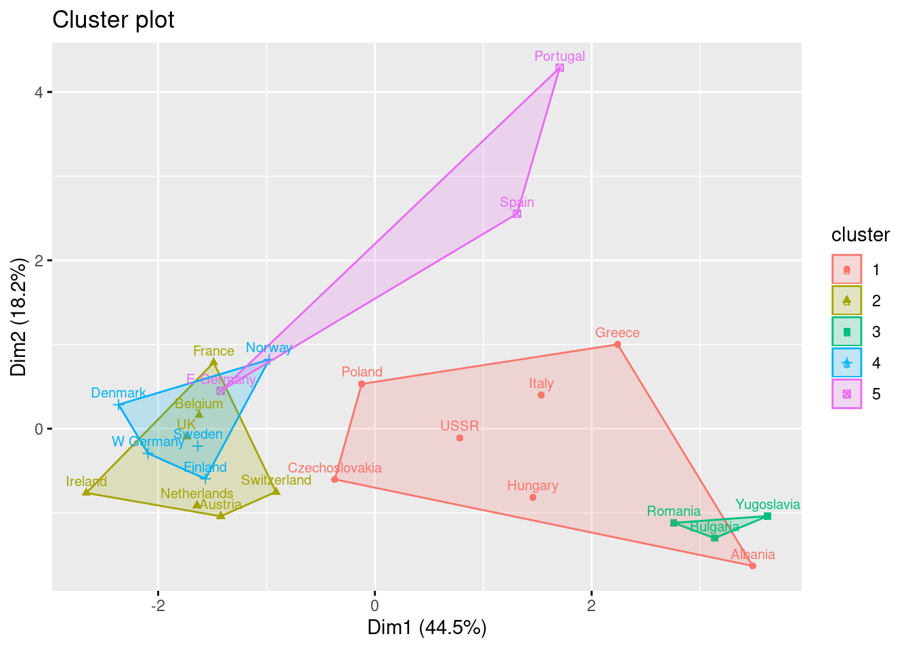
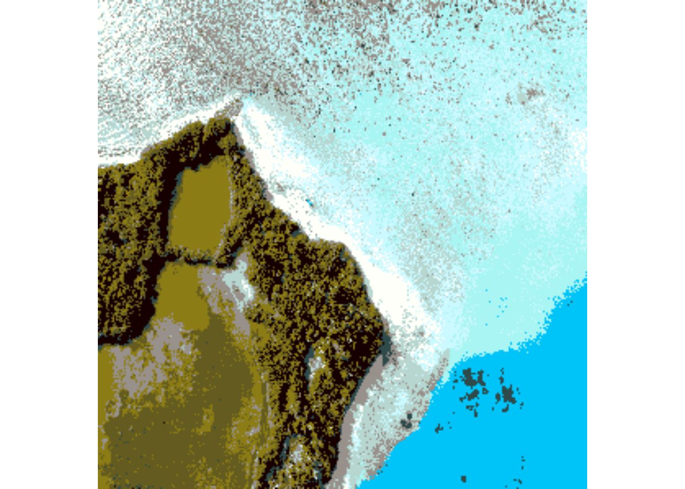
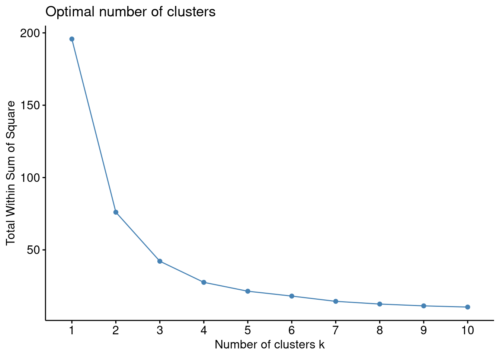
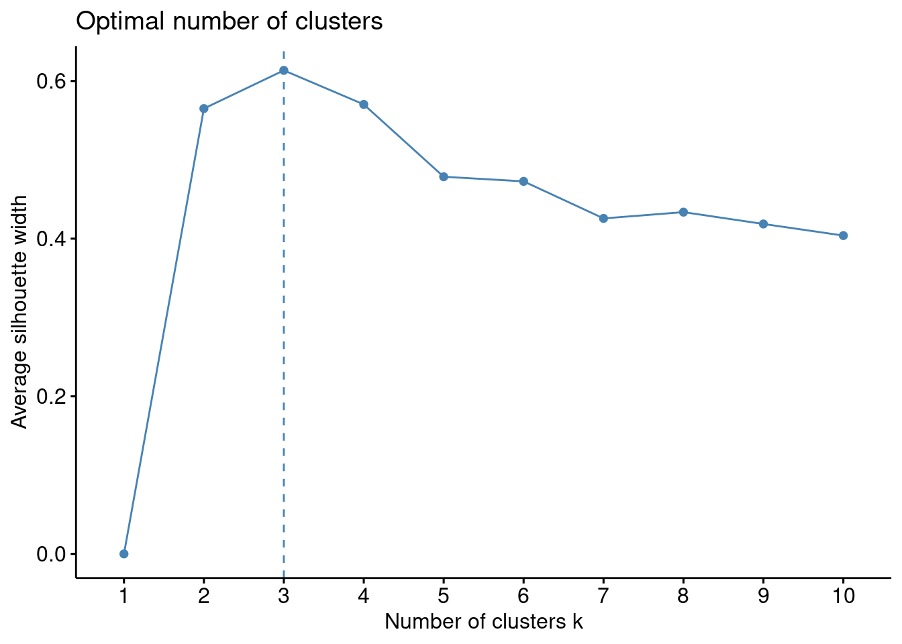
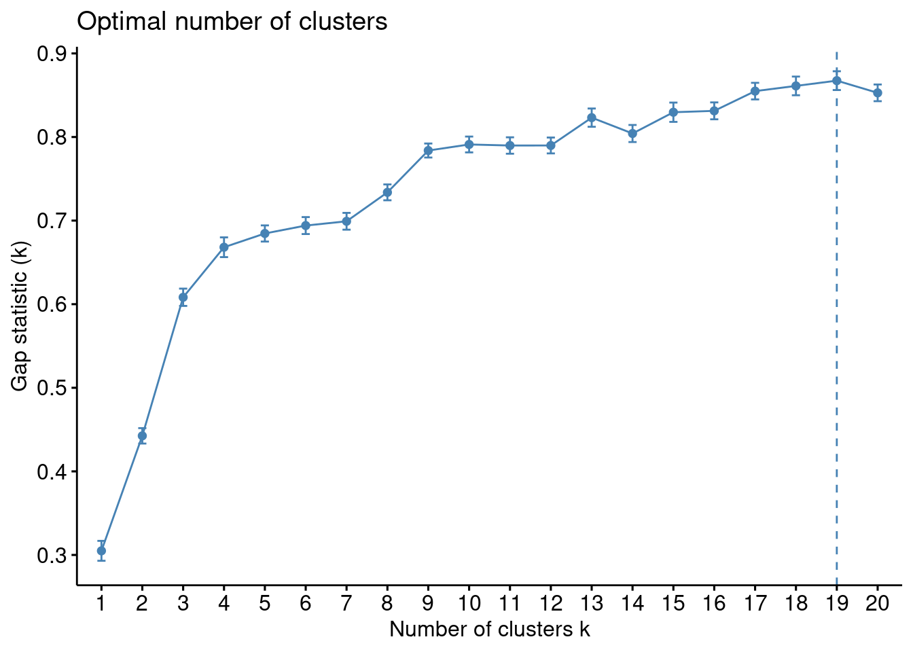

Capítulo 1 Clústers partitivos
1.1 K medias
K-means es, probablemente, uno de los algoritmos de clúster más eficientes computacionalmente. Sin embargo, tiene dos desventajas fundamentales.
- Se considera únicamente la distancia euclídea.
- Hay que especificar desde el comienzo el número de clusters que queremos.
El funcionamiento de este algoritmo se ilustra aquí.
Para hacer k-medias en R utilizamos la función kmeans del paquete base stats. En este caso, especificaremos 5 clusters.
## Albania Austria Belgium Bulgaria Czechoslovakia
## 1 2 2 1 3
## Denmark E Germany Finland France Greece
## 5 3 4 2 1
## Hungary Ireland Italy Netherlands Norway
## 3 2 1 2 5
## Poland Portugal Romania Spain Sweden
## 3 1 1 1 5
## Switzerland UK USSR W Germany Yugoslavia
## 2 2 3 2 1Como vemos, la función kmeans devuelve una agrupación, de hecho, km$cluster tiene una estructura que comparten todos los algoritmos de agrupación (observación, clúster).
1.2 Librería factoextra
factoextra es un paquete para extraer y visualizar las salidas de distintos análisis exploratorios en R.
Para visualizar los grupos resultantes, podemos utilizar la función fviz_cluster de la librería factoextra. Esta función visualizará los datos utilizando las dos primeras componentes principales.

1.3 Variación de información
¿Cómo podríamos medir cuán diferentes son dos agrupaciones dadas sobre los mismos datos? Por ejemplo, la salida de km$cluster escalando y sin escalar los datos.
La variación de información proporciona una medida para decir cuánta información comparten (o en este caso, no comparten) dos particiones de los datos. De hecho, es una distancia en el sentido matemático estricto de distancia.
cluster_scale <- km$cluster
# Repetimos el mismo análisis pero sin escalar
data.protein = read.csv("data/protein.csv")
rownames(data.protein) = data.protein$Country
data.protein$Country = NULL
km = kmeans(data.protein, centers = 5)
cluster_no_scale <- km$clusterEl paquete mcclust incluye una función para calcular la variación de información.
## vi H(1|2) H(2|1)
## 1.5843856 0.8105865 0.7737991¿ Con una agrupación aleatoria qué obtendríamos ?
cluster_rand <- sample(5, length(cluster_scale), replace = TRUE)
vi.dist(cluster_rand, cluster_scale)## [1] 3.4193581.4 Minibatch kmeans
MiniBatch k-means ha sido propuesto como una alternativa al algoritmo k-means para agrupar datos masivos. La ventaja de MiniBatch k-means es que reduce el coste computacional al no utilizar todos los datos en cada iteración, sino una muestra aleatoria de tamaño fijo.
En esta sección ilustraremos el uso de MiniBatch k-means en segmentación de imágenes (Color Quantization). Utilizaremos las librerías de R ClusterR para el algoritmo, y OpenImageR para representar las imágenes.
En este ejemplo utilizaremos una imagen de arte rupestre. Primero descargamos y leemos la imagen.
## [1] 299 299 3Podemos observar que la imagen tiene una resolución de 299, 299, 3 píxeles, separados en tres canales de colores (RGB), por lo que en realidad tenemos 8.940110^{4} datos y 3 variables. Para mostrar la imagen en pantalla utilizamos la función imageShow.
A continuación, convertimos nuestra matriz 381x514x3 en otra matriz de dimensión 195834x3.
## [1] 89401 3Ya estamos en condiciones de hacer MiniBatch K-means a nuestra imagen.
A continuación, vamos a sustituir la información de cada píxel por el centro del clúster al que pertenece. De esta forma obtendremos una imagen que tiene solamente 10 colores.
Devolvemos la imagen a su estructura original para poderla representar.

1.5 K mediano
Partition around medoids puede verse como una versión robusta de kmeans, ya que los centroides son observaciones en lugar de promedios de observaciones. Esto da lugar a clusters más interpretables. Adicionalmente, su implementación tiene ventajas con respecto a kmeans, por ejemplo, no se limita a la distancia euclídea.
Para este algoritmo, utilizaremos la función pam de la librería cluster.
| RedMeat | WhiteMeat | Eggs | Milk | Fish | Cereals | Starch | Nuts | Fr.Veg | |
|---|---|---|---|---|---|---|---|---|---|
| Italy | 9.0 | 5.1 | 2.9 | 13.7 | 3.4 | 36.8 | 2.1 | 4.3 | 6.7 |
| Switzerland | 13.1 | 10.1 | 3.1 | 23.8 | 2.3 | 25.6 | 2.8 | 2.4 | 4.9 |
| Yugoslavia | 4.4 | 5.0 | 1.2 | 9.5 | 0.6 | 55.9 | 3.0 | 5.7 | 3.2 |
| Sweden | 9.9 | 7.8 | 3.5 | 24.7 | 7.5 | 19.5 | 3.7 | 1.4 | 2.0 |
| Spain | 7.1 | 3.4 | 3.1 | 8.6 | 7.0 | 29.2 | 5.7 | 5.9 | 7.2 |
El valor que devuelve la función pam es similar al que devuelve kmeans, excepto que en lugar de tener la propiedad centers, ahora tenemos medoids.
Podemos visualizar la agrupación resultante.

1.5.1 CusterR::clara
Como es lógico, pam es computacionalmente más costoso que k-means, pues calcular el medoid es mucho más difícil que hacer un promedio. Existe una alternativa eficiente a k-medoids, clara para agrupar grandes volúmenes de datos. Se basa en agrupar primero una muestra de los datos originales y luego asignar los datos restantes a estos grupos.
Utilizaremos la función Clara_Medoids del paquete ClusterR, porque vamos a trabajar con la misma foto que usamos para ilustrar MiniBatchKmeans.
Hay que ser muy cuidadosos aquí con los parámetros, sample y sample_size, porque tenemos muchos datos, y esta función es muy costosa computacionalmente si aumentamos estos parámetros.
A continuación asignamos cada pixel a su color correspondiente, y mostramos la nueva imagen.
clara.pred = predict_Medoids(img.vector, clara.m$medoids)
new.img = clara.m$medoids[clara.pred$clusters, ]
dim(new.img) = c(nrow(img), ncol(img), 3)
imageShow(new.img)
1.6 Selección de K
En esta sección estudiaremos tres técnicas para calcular el número óptimo de clusters. Primero, vamos a sacar una muestra de nuestros datos de menos tamaño, ya que los cálculos que haremos serán más costosos.
1.6.1 Método del codo
La idea básica de los algoritmos partitivos es obtener cluster con la mínima WSS (within-cluster sum of squares), que mide cuán compactos son los clusters. Pudiéramos intentar quedarnos con el número de clusters nclust que minimiza este valor. Sin embargo, WSS siempre decrece a medida que consideramos un mayor número de grupos.
El método del codo mira el valor de WSS con respecto al número de grupos considerados, y busca el primer punto en que hay un cambio brusco en la curva, es decir, que adicionar un grupo nuevo no mejora demasiado con respecto a lo que ya había.

1.6.2 Método average silhouette
La idea básica de este método es medir la calidad de la agrupación en función de cuán bien encierra los datos en los diferentes grupos. ¿Debería cambiar mucho la silueta del cluster si quitamos alguna de sus observaciones?
El método de la silueta promedio calcula la silueta de los grupos para distintos números de grupos nclust. El mejor número es aquel que maximiza la silueta.

1.6.3 Método Gap statistic
Este se puede considerar el más formal de los métodos, y puede ser aplicado a cualquier método de clustering, incluyendo clúster jerárquico.
set.seed(3)
gap_stat = cluster::clusGap(img.vector.small, FUN = kmeans,
K.max = 20)
fviz_gap_stat(gap_stat, maxSE = list(method="globalmax"))